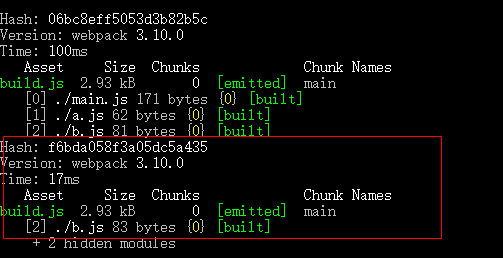

监视模式值的就是，当手写的文件做了修改之后，webpack会检测到，并自动进行打包编译，执行命令如下： webpack main.js build.js --watch 只需要在打包的时候，在后面加上"--watch"参数即可,如下图所示：  图片中，红色框内会显示出编译的内容，这里显示只有b.s作了修改，所以只会编译b.js 此时，打包后的文件也会自动改变 在linux系统下还可以增加编译进度条参数，可查看文档